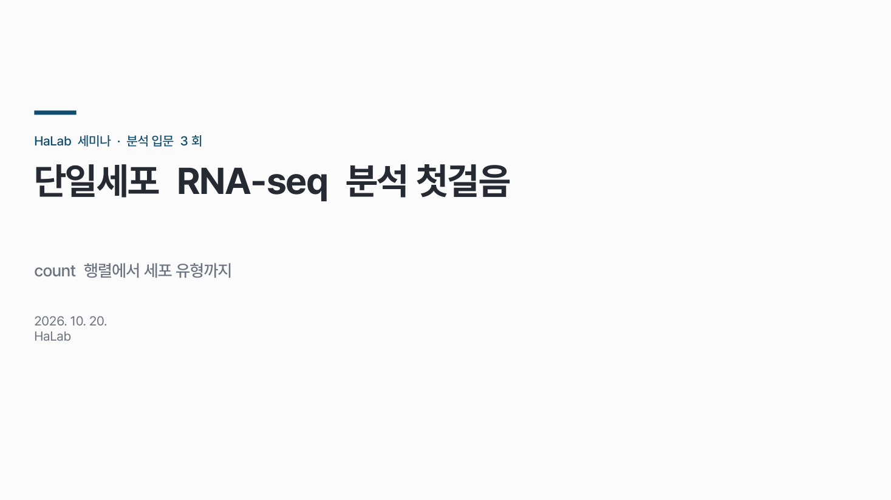
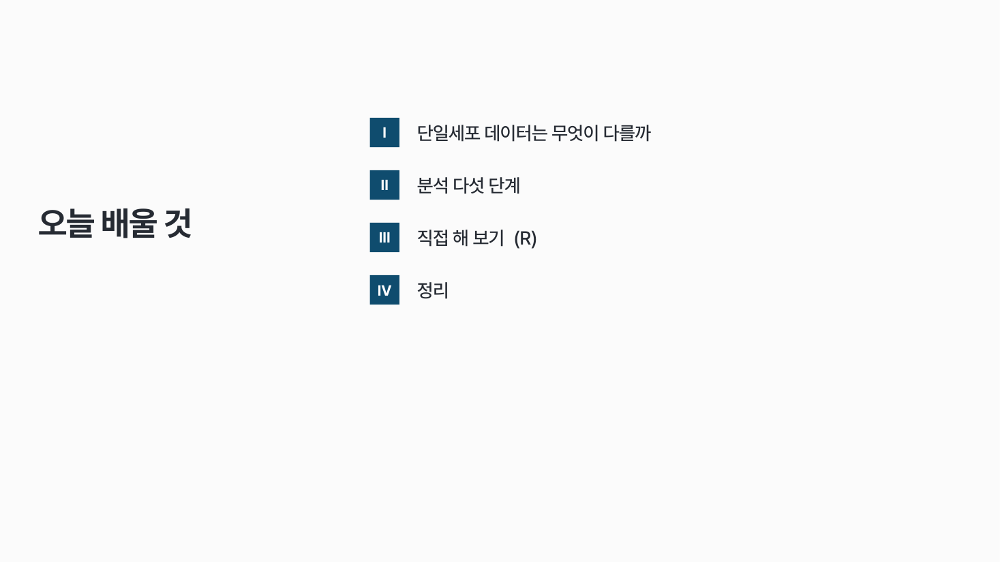
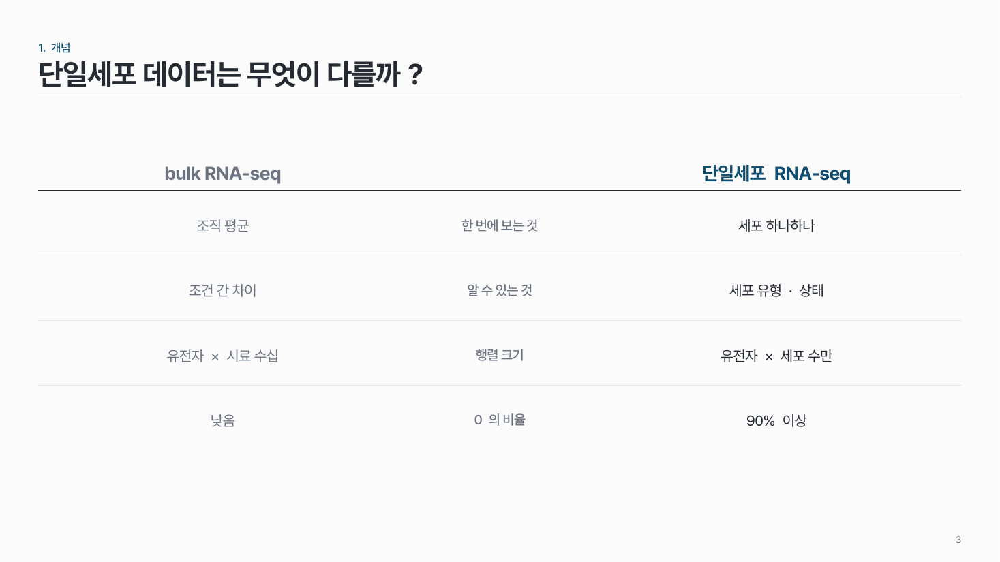
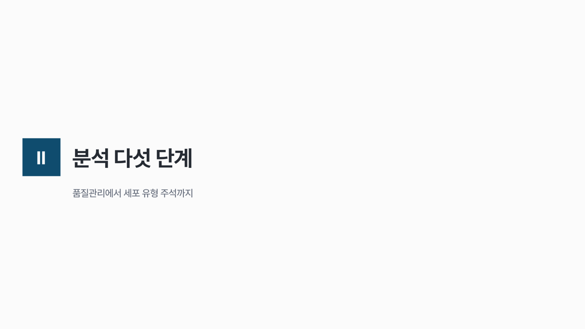
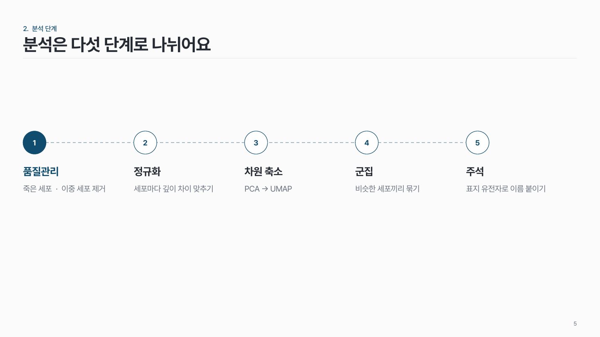
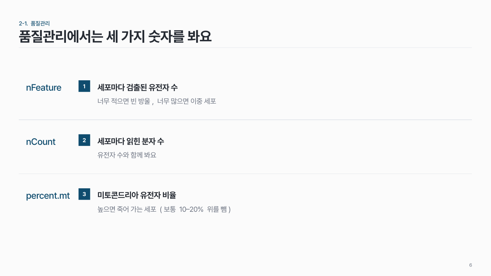
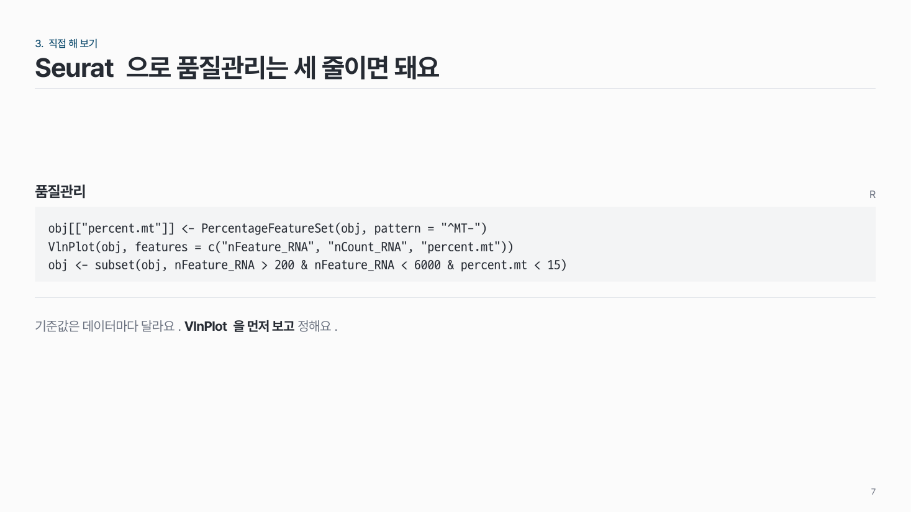
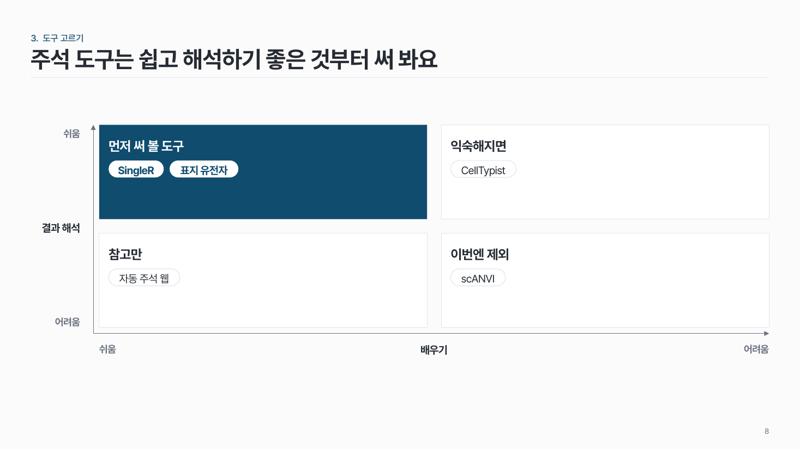
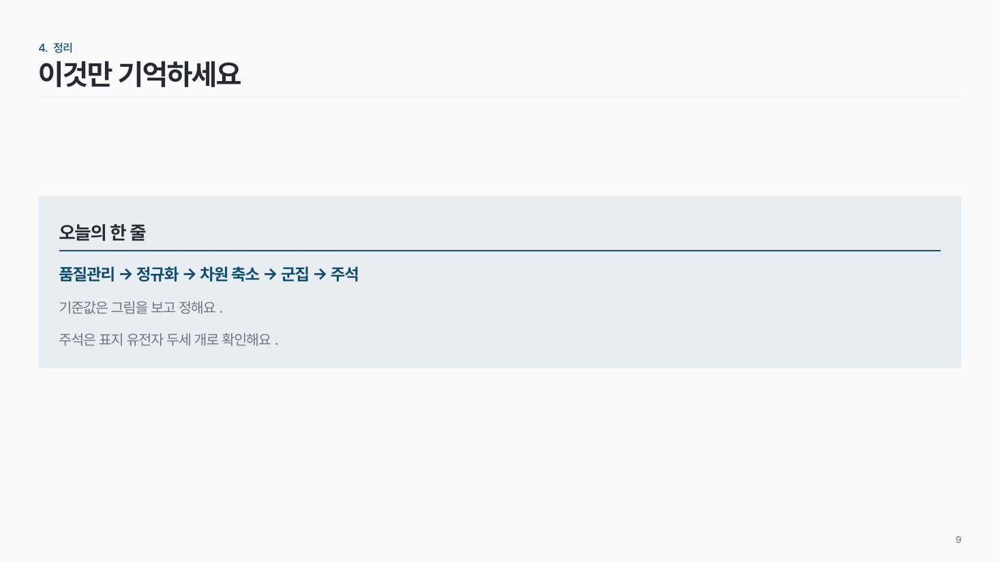
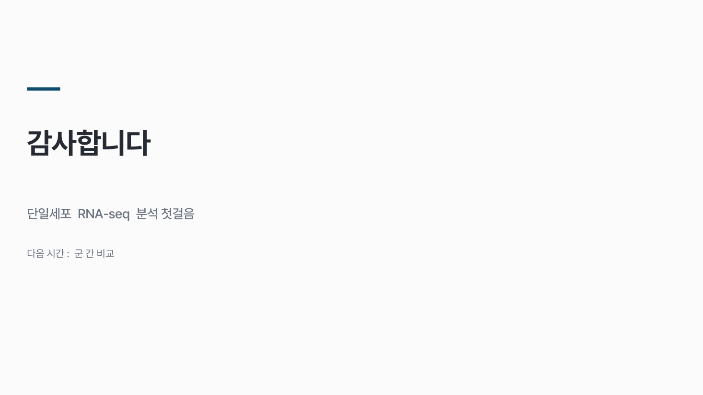

홈 › 자리별 덱 › 수업 · 세미나
수업 · 세미나
학생이 듣고, 나중에 다시 보며 복습해요
밀도 중간 질문형 제목도 좋아요 50–75분
이런 자리
듣는 사람이 나중에 다시 보며 복습해요. 혼자 읽어도 이해되게 쓰되, 한 장에 한 가지만 가르쳐요.
- 흐름: 오늘 배울 것 → 개념 → 방법 · 단계 → 예제 · 실습 → 정리
- 단계 설명은 한 장에 다 넣지 않고 나눠요.
팁
- 질문형 제목도 좋아요 ("왜 정규화가 필요할까?").
- 섹션이 4개 이상이면 목차와 간지를 넣어 지금 어디인지 보여 줘요.
- 코드·명령어는 그림이 아니라 글자로 넣어요. 복사해서 따라 할 수 있게.
- 마지막 장은 "이것만 기억하세요" 한 장으로.
덱 흐름
표지 · 오늘 배울 것 → 개념 → 방법 · 단계 → 예제 · 실습 → 정리
1
표지 · 오늘 배울 것
목차는 '오늘 배울 것'으로. 섹션이 4개 이상이면 넣어요.


2
개념
한 장에 한 개념. 질문형 제목도 좋아요.

3
방법 · 단계
단계를 한 장에 다 넣지 말고, 전체 그림 한 장 + 단계마다 한 장.



4
예제 · 실습
코드는 그림이 아니라 글자로. 복사해서 따라 할 수 있게.


5
정리
"이것만 기억하세요" 한 장.

